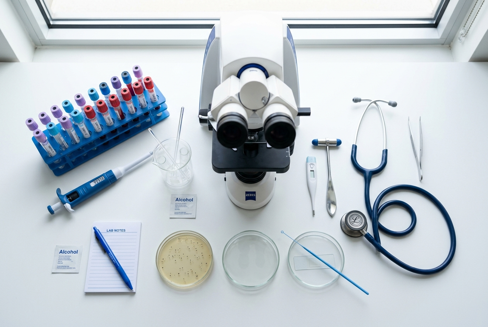
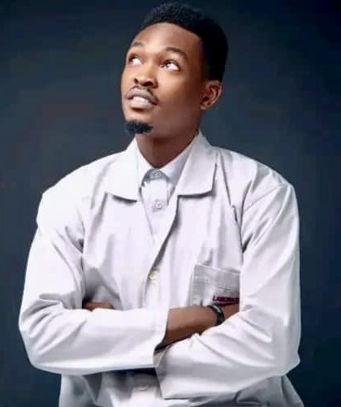
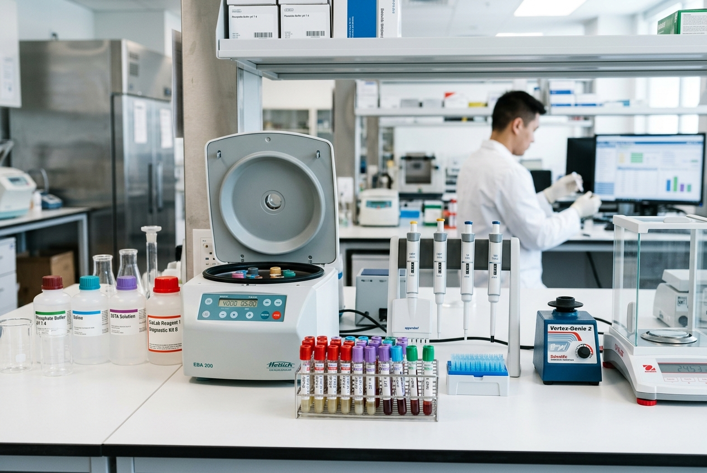
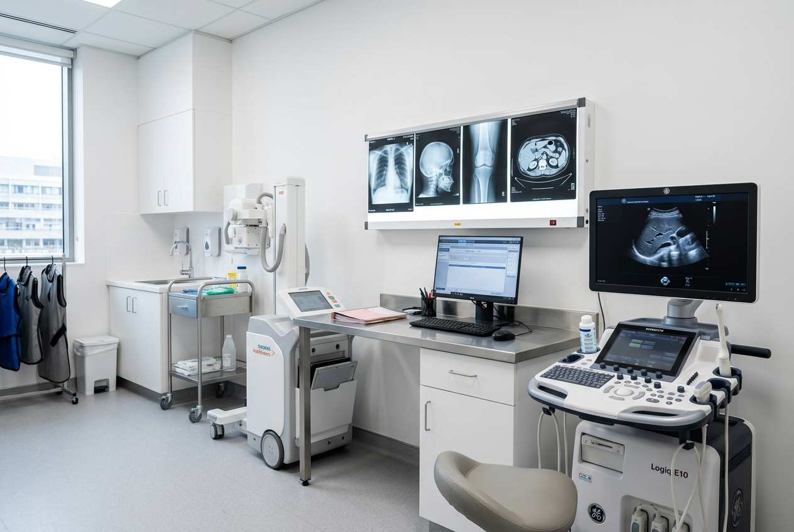
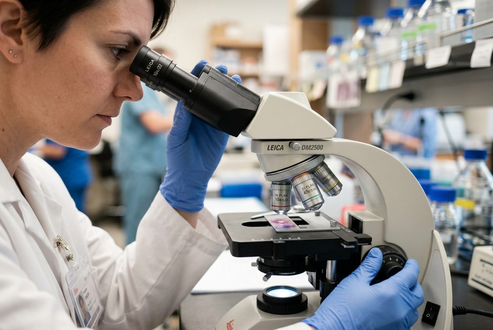
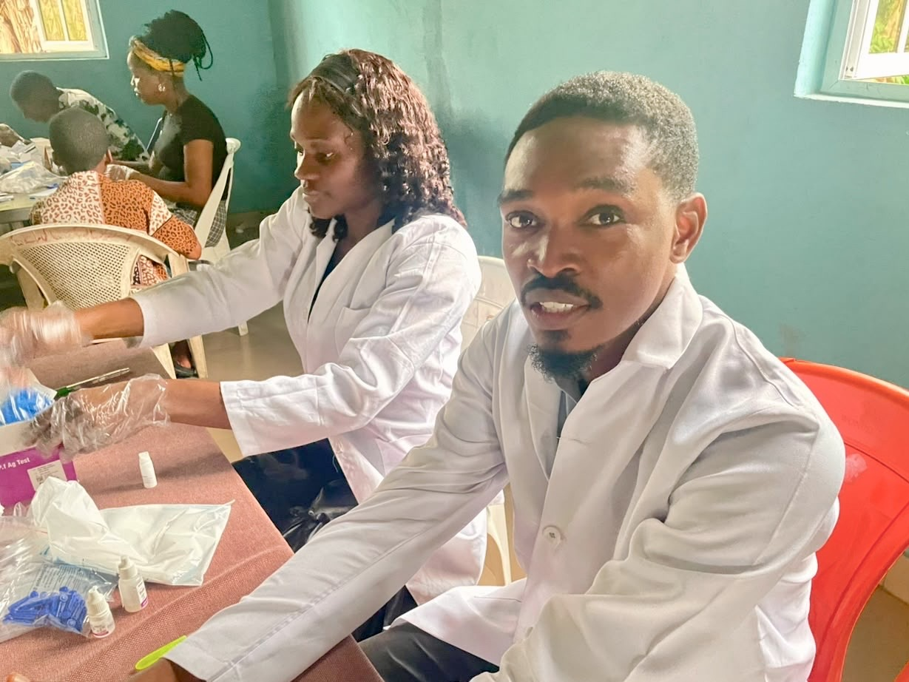
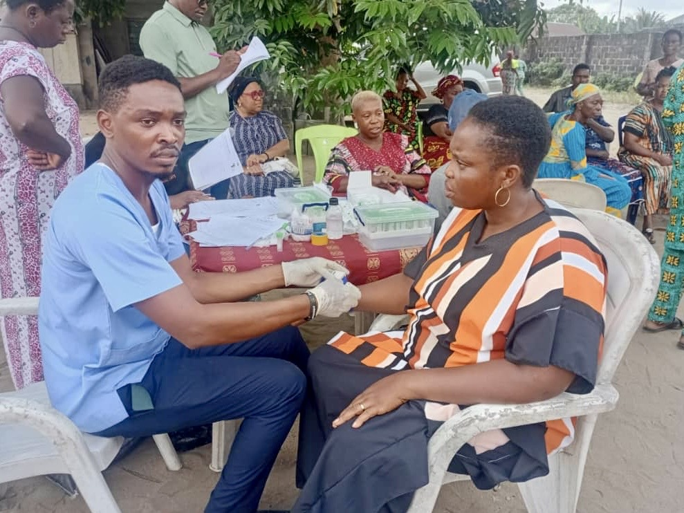

Professional Qualifications
- Medical Laboratory Technician (MLT) - Rivers State College of Health Science and Management Technology
- Licensed Practitioner - Medical Laboratory Science Council of Nigeria (MLSCN)
A professional team of qualified medical laboratory experts committed to bringing accurate, reliable diagnostic services to every patient, wherever they are.

We are a professional team of qualified Medical Laboratory Scientists and Technicians delivering high-quality diagnostic services at your doorstep. At Soughtout Medicals, we believe that quality healthcare should not be limited by geography or availability of facilities.
Our team brings years of combined experience in clinical laboratory practice, mobile diagnostics, and patient care, serving patients across homes, offices, schools, hospitals, hotels, and corporate organizations. We are equally committed to medical outreach programmes reaching both rural and urban communities.
We operate with a strong focus on accuracy, patient confidentiality, and professionalism. Every service we provide is guided by international laboratory standards and a genuine passion for improving healthcare accessibility in Nigeria.
From routine blood investigations to advanced molecular tests and radiology services, we are your trusted mobile diagnostics partner.
The vision and expertise behind Soughtout Medicals Laboratory & Radiology.

Also known as Mbaba Ugwem-Oreibot Junior, he is a trained Medical Laboratory Professional who obtained his Medical Laboratory Technician (MLT) qualification from Rivers State College of Health Science and Management Technology.
With over six years of professional experience, he has served in various healthcare facilities, including Meridian Hospitals, where his dedication to patient-centered care, professionalism, and accurate diagnostic services made a significant impact.
Driven by a passion for improving healthcare accessibility across Nigeria, he founded Soughtout Medicals to bring professional diagnostic care directly to patients wherever they are, whether at home, at work, or in their communities.
His leadership ensures that every service delivered meets the highest standards of accuracy, safety, and patient compassion.
Our team holds recognised qualifications and operates to verified professional standards across all services we deliver.
We use industry-standard diagnostic equipment to ensure every investigation is accurate, reliable, and professionally conducted.



We are open to medical outreach programmes for any organization, institution, school, church, or community group in both rural and urban areas. Our team mobilizes fully equipped to your location, bringing quality diagnostics to people who need it most.

Our team goes beyond the clinic, delivering diagnostics and participating in outreach programmes across Nigeria.
